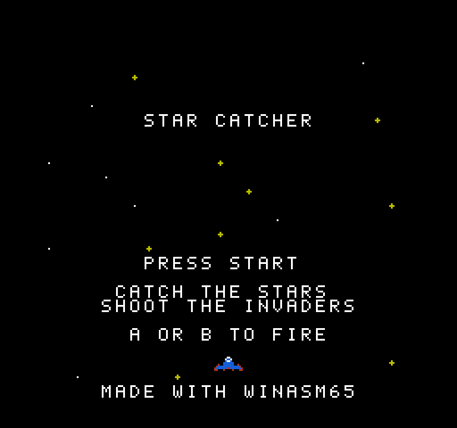
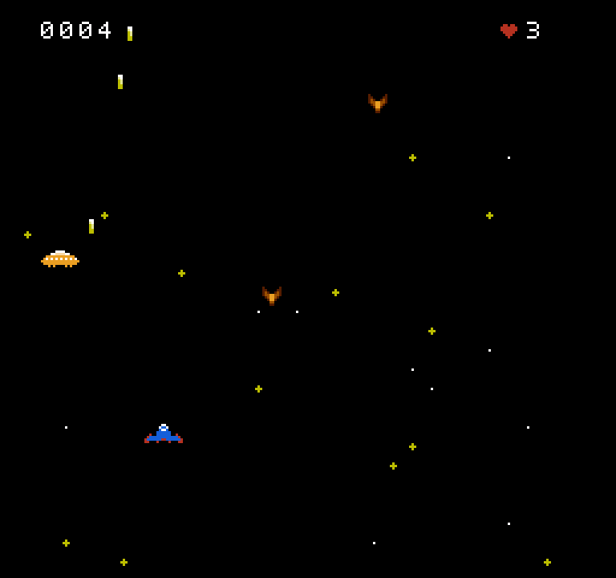
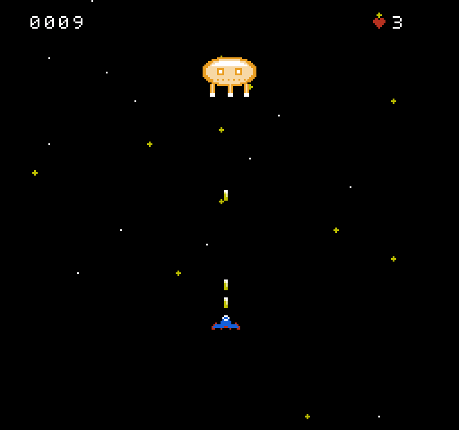
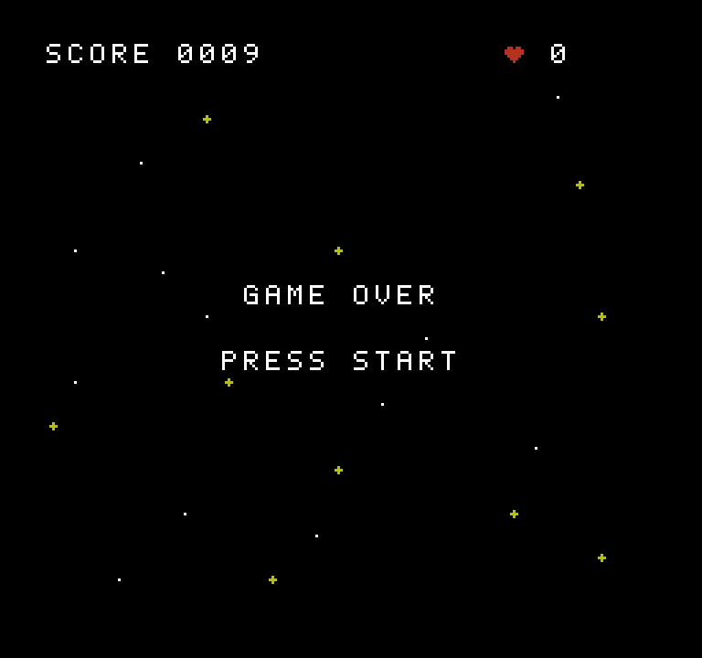

Example game: Star Catcher
A small NES game written for this documentation, code and graphics alike: a vertical shooter in about 1,650 lines of 6502 assembly, graphics drawn with the Graphics Designer, and a config.json that puts them together into a 24,592-byte ROM. Every example on these pages comes from it. This page shows how to build and play it, how the project is laid out, how the graphics are made, and walks through the code.
The game
A vertical shooter. The starry sky scrolls down past the ship: fly with the d-pad, fire with A or B. Meteors fall, saucers zigzag and drop bombs, hunters dive at the ship; shoot them, and catch the stars for bonus points. After about forty seconds a warning blinks and the level's boss comes down, firing volleys of bombs. Break it and the next level starts, faster. Three hits and the game is over. The code and the graphics are original (no tile, sound or routine is borrowed from another game) and may be reused freely.








tools/screenshots/shoot-game.ps1: an autopilot written in Lua plays the game in Mesen2, firing all the time and steering under the lowest enemy or the boss (see tools/screenshots).Build and play
From the example_star_catcher folder, any of these builds the ROM, star_catcher.nes:
compile.bat # exports the graphics, deletes the previous outputs, then WinASM65 -l -c config.json
WinASM65 -l -c config.json # the same build by hand; -l also writes src\*.lstRun the command line from the project folder: on the command line the paths of config.json are relative to the current directory (see the config.json reference). Open the ROM in Mesen2, or any NES emulator: mapper 0, 16 KB of program, 8 KB of tiles. compile.bat first runs WinASM65.Designer export gfx when the designer is on the PATH; without it, the exported graphics committed in gfx/ are used.
In VS Code with the WinASM65 extension, open the folder and press F5: the extension finds config.json, builds the project and starts Mesen2 with the debugger attached. The committed config.json names the emulator in its Emulator section, mesen2 at an example path, C:\Emulators\Mesen2\Mesen.exe: point it at your Mesen2, or set the winasm65.emulatorPath setting (or emulatorPath in launch.json), which takes precedence. A breakpoint on line 203 of src/game.asm, the first instruction of NMI, stops at the start of every frame, as on the VS Code page.
| Button | Does |
|---|---|
| START | On the title screen, starts a game. On the game over screen, after two seconds (120 frames), goes back to the title. |
| D-pad | Moves the ship two pixels per frame, between x = 8 and x = 232 and between y = 112 and y = 208: the lower half of the screen. |
| A or B | Fires at once; held, fires again every 8 frames. At most three shots are in the air. |
| SELECT | Read, but not used. |
The rules, as the code has them:
| Object | Moves | Shots to break | Points |
|---|---|---|---|
| Star | Falls one pixel a frame, twinkling. Shots go through it. | — | 5, caught by the ship |
| Meteor | Falls one or two pixels a frame. | 1 | 1 |
| Saucer | Falls one pixel a frame, zigzags from side to side, and now and then drops a bomb. | 2 | 3 |
| Hunter | Falls two pixels a frame and turns towards the ship. | 1 | 2 |
| Boss | Comes down after the level's 40 × 64 frames (about 43 seconds), then moves from side to side and fires three bombs every 48 frames. | 24, and 8 more each level | 50 |
At most eight objects are on screen, and one appears every 40 frames on level 1, four frames sooner each level, down to 14. An enemy or a bomb that touches the ship costs a life; the ship then blinks for 64 frames, during which nothing hurts it. After the boss, LEVEL CLEAR shows for 150 frames and the next level begins; from level 9 on, the levels are all alike. The score has four decimal digits.
The project
| File | What it is |
|---|---|
config.json | The project: three units, combined with the tiles into the ROM. |
compile.bat | Exports the graphics when WinASM65.Designer is on the PATH, deletes src\*.o, src\*.symb, src\*.lst and the ROM, then builds with listings. |
src/header.asm | The 16-byte iNES header, with horizontal mirroring for the vertical scrolling. |
src/game.asm | The game: start-up, main loop, NMI and scrolling, ship and shots, enemies and bombs, the boss, score, sound, data. |
src/nes.inc | NES registers, buttons and two macros, included by game.asm. Not a unit of its own. |
src/vectors.asm | The NMI, RESET and IRQ vectors. |
chr/tiles.chr | The 8 KB of tiles, drawn in the designer's Tile Set editor. |
gfx/game.pal.json | The 8 palettes. |
gfx/objects.msprite.json | The twelve metasprites (ship, shot, star and its twinkle, meteor, saucer, hunter, bomb, burst, heart, boss and the boss hit) and the twinkle animation. |
gfx/title.screen.json, gfx/over.screen.json | The title and game over screens. |
gfx/play.map.json | The sky, a map of 2×2 metatiles two screens high, that scrolls in a loop. |
gfx/*.asm, *.bin, *.nam | What the assets export, included by game.asm; committed, so the game builds without the designer. |
config.json
{
"Input": [
{
"FileName": "src/header.asm",
"Dependencies": []
},
{
"FileName": "src/game.asm",
"Dependencies": []
},
{
"FileName": "src/vectors.asm",
"Dependencies": ["src/game.asm"]
}
],
"Output": {
"ObjectFile": "star_catcher.nes",
"Files": [
{
"FileName": "src/header.o",
"Size": "$10"
},
{
"FileName": "src/game.o",
"Size": "$3FFA"
},
{
"FileName": "src/vectors.o"
},
{
"FileName": "chr/tiles.chr"
}
]
},
"Emulator": {
"Name": "mesen2",
"Path": "C:\\Emulators\\Mesen2\\Mesen.exe"
}
}Inputlists the three units. Each is assembled on its own into an object file beside its source:src/header.o,src/game.o,src/vectors.o.game.asmalso writessrc/game.symb, the JSON table of its global names.Outputputs four files end to end.header.ois already 16 bytes, so its"Size": "$10"only guards against a header that grows.game.oholds 5,336 bytes, assembled from.org $C000(the two 1,024-byte screens included);"Size": "$3FFA"(always hexadecimal) pads it with zeros to 16,378 bytes, so that the six bytes ofvectors.ofall on$FFFA–$FFFF, the last six bytes of the 16 KB bank.chr/tiles.chris taken as it is.Emulatoris used only to debug: the emulator the VS Code debugger and the monitor start, here Mesen2 at an example path to replace with your own. See Emulator bridges.- There is no
Targetsection: the target israwand the image is written exactly as concatenated, header included. The complete config.json example builds the same ROM with aTargetsection that writes the header instead.
Why vectors.asm depends on game.asm
.org $FFFA
.word NMI ; once per frame, at the start of the vertical blank
.word RESET ; at power-on and reset
.word IRQ ; not usedNMI, RESET and IRQ are labels of game.asm. Units are assembled separately, so while vectors.asm is assembled it does not know them: it emits three placeholder words. Its "Dependencies": ["src/game.asm"] lets it read src/game.symb in the second phase of the build, where it finds "NMI":49262, "RESET":49152 and "IRQ":49306 and patches the words to 6E C0 00 C0 9A C0. Without the dependency the build stops with Line 0 - File src/vectors.asm - Type Undefined symbol. The order of Input does not matter: every unit is assembled before any is resolved. See How units are resolved.
header.asm needs nothing from the others: it is the header, byte by byte.
.org $0000
.byte "NES", $1A
.byte 1 ; 1 x 16 KB of program ROM
.byte 1 ; 1 x 8 KB of character ROM (the tiles)
.byte %00000000 ; mapper 0 (NROM), horizontal mirroring: $2000 and $2800
; are two screens one above the other, for vertical scrolling
.byte 0
.dsb 8 ; unused, zeroThe PPU has room for two nametables, and the cartridge decides how the four addresses $2000, $2400, $2800 and $2C00 map onto them. With horizontal mirroring (bit 0 of byte 6 clear), $2000 and $2400 are the first, $2800 and $2C00 the second: two different screens stacked vertically, which is what a game that scrolls up or down needs.
The graphics
Every picture of the game is an asset of the Graphics Designer, edited in VS Code and exported to assembly sources that game.asm includes. The exports are committed next to the assets, so the game builds with the assembler alone; a test checks they are what an export of the assets gives today.
| Asset | Editor | Exported as | Used by |
|---|---|---|---|
chr/tiles.chr | Tile Set | itself: 8 KB taken as they are by config.json | the PPU's pattern tables |
gfx/game.pal.json | Palettes | game.pal.asm (palettes:), game.pal.bin | load_palettes |
gfx/objects.msprite.json | Metasprites | objects.msprite.asm: twelve metasprites and the animation twinkle | draw_sprites and the routines it calls |
gfx/title.screen.json, gfx/over.screen.json | Screen | title.nam, over.nam (1,024 bytes each) and their .screen.asm | enter_title, enter_over |
gfx/play.map.json | Map | play.map.asm: 9 metatiles and a map of 16×30 of them | draw_sky |
The JSON assets name the tile set and the palettes they are drawn with ("../chr/tiles.chr", "game.pal.json"), and a prefix for their labels: spr_ for the metasprites, scr_ for the screens, bg_ for the map. The game includes the five exports in its data, near the end of game.asm:
.include "../gfx/game.pal.asm"
.include "../gfx/objects.msprite.asm"
.include "../gfx/title.screen.asm"
.include "../gfx/over.screen.asm"
.include "../gfx/play.map.asm"Saving an asset in VS Code exports it, and the next build uses it; compile.bat also exports them all first when WinASM65.Designer is on the PATH (WinASM65.Designer export gfx).
Tiles
The NES draws everything from 8×8 tiles stored in the cartridge's character ROM. Each pixel of a tile is a number from 0 to 3; the palette the tile is shown with turns that number into a colour, and 0 is transparent (or the background colour). A tile takes 16 bytes: eight bytes that hold bit 0 of each pixel, one byte per row with the leftmost pixel in bit 7, then eight bytes that hold bit 1. The Tile Set editor reads and writes chr/tiles.chr in that form.
Tile n is at offset n × 16. Pattern table 0, the first 4 KB, holds every tile the game uses, for the background and the sprites alike (PPUCTRL is set to %10000000: NMI on, both from table 0). Pattern table 1 stays empty, which makes 8 KB, one CHR bank.
Letters at their ASCII codes
The font has 5×7 glyphs for the digits, the capital letters and !, - and :, each stored at the tile number equal to its ASCII code, with one empty column on the left and one empty row below. "0" is tile $30, "A" tile $41, and the space, $20, is a tile left empty. So a string in the source is already a row of tiles: .asciiz "CLEAR" emits 43 4C 45 41 52 00, and those are the tiles of C, L, E, A, R. Digits work the same way, so the score is drawn by adding '0' to each digit. Since the sprites use the same pattern table, the same tiles write the score, WARNING and LEVEL CLEAR as sprites.
The other tiles: $01–$02 the ship, $03–$04 the two frames of a twinkling star, $05 the meteor, $06–$07 two distant stars for the background, $08 the burst, $0A the heart of the game over screen, $60 the ship's shot, $61 a bomb, $62–$63 the saucer, $64 the hunter, $65 the heart drawn in sprites, and $70–$7B the boss, 4 × 3 tiles.

WinASM65.Designer render in the colours of the ship's sprite palette (--item ../gfx/game.pal.json#4), so the other sprites show in colours that are not theirs.Palettes
The game loads 32 bytes into the PPU at $3F00: four palettes for the background, four for the sprites. Each entry is a colour number of the NES's fixed palette, and $0F (black) is the shared colour 0. They are edited in gfx/game.pal.json, where each palette has a name, and exported as:
palettes:
.byte $0F, $30, $16, $28 ; background 0: text
.byte $0F, $30, $16, $28 ; background 1: background 1
.byte $0F, $30, $16, $28 ; background 2: background 2
.byte $0F, $30, $16, $28 ; background 3: background 3
.byte $0F, $30, $11, $16 ; sprite 0: ship
.byte $0F, $28, $38, $30 ; sprite 1: stars
.byte $0F, $07, $17, $27 ; sprite 2: meteors
.byte $0F, $27, $37, $30 ; sprite 3: burst
PAL_TEXT = 0
…
PAL_BURST = 7The screens and the map use background palette 0 everywhere: letters are drawn with colour 1 (white), the heart with colour 2 (red), the bright background star with colour 3 (yellow). Each sprite's palette is in the attribute byte of its metasprite rows: 0 for the ship, the score and the heart (white letters, a red heart in colour 3), 1 for the stars and the shot, 2 for the meteor, the hunter and the boss, 3 for the saucer, the bomb, the burst and the boss's hit colours.
Metasprites and the twinkle
An object on screen is a metasprite: one or more hardware sprites placed around an origin. The designer exports each one as rows of four bytes (y offset, tile, attributes, x offset) ended by $80, a table of their addresses, and a number for each:
spr_saucer:
.byte $00, $62, $03, $00
.byte $00, $63, $03, $08
.byte $80
…
spr_metasprites_lo:
.lobytes spr_ship, spr_star, spr_star_twinkle, spr_meteor, spr_burst, spr_shot, spr_bomb, spr_saucer, spr_hunter, spr_heart, spr_boss, spr_boss_hit
…
SPR_MS_SHIP = 0
…
SPR_MS_BOSS_HIT = 11
…
spr_twinkle_anim:
.byte 1, 8
.byte 2, 8
.byte $FF, 1The boss is twelve sprites, four by three; boss hit is the same twelve tiles with palette 3, shown while a shot has just touched it. An animation is rows of a metasprite number and a duration in frames, ended by $FF and whether it loops: the star shows SPR_MS_STAR for 8 frames, then SPR_MS_STAR_TWINKLE for 8.
Screens and the sky
The title and game over screens are whole nametables, 960 tile bytes and 64 attribute bytes, drawn in the Screen editor and exported to title.nam and over.nam; title.screen.asm is just scr_title: .incbin "title.nam" and SCR_TITLE_SIZE = 1024. The sky is a map instead: 9 metatiles of 2×2 tiles (bg_metatile_tl, _tr, _bl, _br and bg_metatile_pal) and one byte per metatile in bg_play_map, 16 wide and 30 high (BG_PLAY_WIDTH, BG_PLAY_HEIGHT): two screens, one above the other, in 480 bytes instead of 2,048. Its last row of stars joins its first, so it can scroll in a loop.
A tour of game.asm
The file starts with .include "nes.inc", then its constants (speeds, limits, the kinds of objects, the boss's tuning, screen positions), then its variables. The variables live in the zero page, where instructions are one byte shorter and one cycle faster. .memarea $0000 starts the reservation area, and each .res gives a name the next free address and moves on:
.memarea $0000
frame_ready .res 1 ; set by NMI, cleared by wait_frame
frame_count .res 1
buttons .res 1 ; held this frame
…
scroll_y .res 1 ; the sky's first line on screen, 0-239 ...
scroll_nt .res 1 ; ... of nametable $2000 (0) or $2800 (2)
…
obj_type .res MAX_OBJECTS ; 0 when the slot is free
obj_x .res MAX_OBJECTS
obj_y .res MAX_OBJECTS
obj_speed .res MAX_OBJECTS ; pixels down a frame
obj_dx .res MAX_OBJECTS ; saucers: pixels sideways (signed); bursts: frames left
obj_hp .res MAX_OBJECTS ; shots left to break it
shot_x .res MAX_SHOTS
shot_y .res MAX_SHOTS ; 0 when the slot is free
….res emits nothing: the names are only addresses, $00 to $79. The objects, shots and bombs are tables, one byte per slot in each, indexed by X. obj_speed is $35, which is why adc obj_speed,x assembles to the two-byte zero page,X form 75 35 (the hover card shows exactly that).
Start-up
RESET, at $C000, is where the console starts. It masks interrupts, turns decimal mode off (the NES's 6502 has none anyway), stops the APU frame interrupt, sets the stack, turns the picture and the NMI off, and then waits for the PPU to warm up, which takes two vertical blanks. Between the two waits it clears the 2 KB of RAM:
lda #0
@clear: sta $0000,x
sta $0100,x
…
sta $0700,x
inx
bne @clearThe wait is the macro wait_vblank from nes.inc. Its anonymous label - belongs to each expansion, so the macro can be used four times in the file:
.macro wait_vblank
- bit PPUSTATUS
bpl -
.endmacroThen RESET hides every sprite, loads the palettes, enables the pulse 1 and noise channels (APU_STATUS = %00001001), seeds the random generator and draws the title screen.
Main loop, states and phases
The game is in one of three states. Each has an enter_ routine, which draws its screen once, and an update_ routine, called once per frame:
MainLoop:
jsr wait_frame
jsr read_joypad
lda state
cmp #STATE_PLAY
beq @play
cmp #STATE_OVER
beq @over
jsr update_title
jmp MainLoop
@play: jsr update_play
jmp MainLoop
@over: jsr update_over
jmp MainLoop@play and @over are local labels: they belong to MainLoop, and other routines reuse the same names (@loop appears in eleven of them). Within play, a level goes through three phases, in phase: PHASE_WAVES, while enemies come; PHASE_BOSS, the warning then the boss; PHASE_CLEAR, after it broke. update_play runs the frame:
update_play:
jsr scroll_sky
jsr move_ship
jsr fire
jsr move_shots
lda phase
bne +
jsr spawn_objects ; PHASE_WAVES
jsr count_time
+ jsr move_objects
jsr move_bombs
lda phase
cmp #PHASE_BOSS
bne +
jsr update_boss
+ lda phase
cmp #PHASE_CLEAR
bne +
jsr update_clear
+ lda lives
bne +
jmp enter_over
+ jmp draw_spritesEach + is the next anonymous label down: five of them in one routine, each reached from the line just above it.
NMI, the sprite DMA and the scroll
The PPU raises an NMI at the start of every vertical blank, 60 times a second: the only time video memory can be written while the picture is on. NMI, at $C06E, saves the registers, copies the 256-byte sprite table at OAM = $0200 to the PPU with one write to OAMDMA, and sets the scroll for the coming picture:
NMI:
pha
txa
pha
tya
pha
lda #0 ; copy the sprite table to the PPU
sta OAMADDR
lda #>OAM
sta OAMDMA
bit PPUSTATUS ; the scroll: x 0, y scroll_y of nametable scroll_nt
lda #0
sta PPUSCROLL
lda scroll_y
sta PPUSCROLL
lda scroll_nt
ora #PPUCTRL_NMI
sta PPUCTRL#>OAM is the high byte of $0200: the page the DMA copies. PPUSCROLL takes two writes, x then y, after bit PPUSTATUS has reset its latch; bit 1 of PPUCTRL picks the nametable the y counts from. Then the NMI sets frame_ready and restores the registers. IRQ is the label of its last instruction, the rti, so the unused IRQ vector returns at once. The main loop waits for the NMI in wait_frame:
wait_frame:
lda #0
sta frame_ready
- lda frame_ready
beq -
inc frame_count
rtsThe scrolling sky
enter_play draws the map's two screens with the picture off: draw_sky with A = 0 writes rows 0–14 of the map into the nametable at $2000, with A = 1 rows 15–29 into $2800, each a row of metatiles as two rows of tiles, then the 64 attribute bytes from the metatiles' palettes. With horizontal mirroring the two nametables are 480 lines of sky, one above the other. Every frame, scroll_sky moves the picture's first line one line up those 480, so the stars move down:
scroll_sky:
lda scroll_y
bne +
lda #240
sta scroll_y
lda scroll_nt
eor #2
sta scroll_nt
+ dec scroll_y
rtsAt the top of a nametable it jumps to line 239 of the other one: from the top of $2000 to the bottom of $2800, whose rows the PPU continues with those of $2000. The sky never needs redrawing, and the NMI hands the two variables to the PPU. Because the background moves, the score and the lives cannot be background tiles: draw_hud_sprites draws the four digits, a heart and the lives as sprites, from HUD_X = 16, HUD_Y = 8. The game over screen does not scroll, and gets the final score and lives in its tiles, from draw_hud, while the picture is still off.
Reading the joypad
Writing 1 then 0 to JOY1 latches the eight buttons; eight reads then return them one by one in bit 0, A first. lsr a moves the bit into the carry and rol buttons into the variable, so A ends in bit 7 and Right in bit 0, the order of the BUTTON_ constants. The buttons that went down this frame are those held now and not before:
ldx #8
@bit: lda JOY1
lsr a ; the button is in bit 0
rol buttons
dex
bne @bit
lda prev_buttons
eor #$FF
and buttons
sta pressedpressed is what START is tested against, so holding the button does not restart a game; buttons is what moves the ship, so holding a direction keeps it moving.
Firing
A new press of A or B fires at once; while either is held, fire_timer lets a shot go every FIRE_DELAY = 8 frames. The mask is an expression, BUTTON_A|BUTTON_B:
fire:
lda fire_timer
beq +
dec fire_timer
+ lda pressed
and #BUTTON_A|BUTTON_B
bne @shoot
lda buttons
and #BUTTON_A|BUTTON_B
beq @done
lda fire_timer
bne @done
@shoot: ldx #MAX_SHOTS-1
@find: lda shot_y,x
beq @found
dex
bpl @find
@done: rts ; three shots in the air alreadyA shot starts at the ship's nose and climbs SHOT_SPEED = 5 pixels a frame; move_shots frees it near the top and calls shot_hits, which tests it against every enemy and then the boss.
Spawning with the LFSR
Random numbers come from an 8-bit Galois linear-feedback shift register: shift right, and if a 1 fell out, exclusive-or with $B8. It runs through all 255 non-zero values before repeating, and never reaches 0, which is why the seed must not be 0. On the title screen, START seeds it with frame_count forced odd, so how long the player waited decides the sky.
random:
lda rng
lsr a
bcc +
eor #$B8
+ sta rng
rtsEvery spawn_delay frames, spawn_objects looks for a free slot (obj_type = 0) and fills it at the top, in a column that is a multiple of 8. One more random number picks the kind by ranges:
jsr random
cmp #48
bcc @star
cmp #120
bcc @meteor
cmp #200
bcc @saucerBelow 48 a star (about 19 %), then a meteor (28 %), a saucer (31 %), and from 200 on a hunter (22 %). start_level sets spawn_delay to FIRST_DELAY less four frames for each level after the first, but not under MIN_DELAY.
Meteors, saucers, hunters and bombs
move_objects adds each object's speed to its row and frees its slot past row 232. A saucer then moves sideways by obj_dx (1 or $FF, which added is −1), turns back at the sides by negating it, and drops a bomb when a random number is under 3: 1 or 2, since the generator never gives 0, so about once in 128 frames. A hunter steps one pixel towards the ship every other frame. A burst, what is left of a broken enemy, is the same slot with KIND_BURST, its obj_dx counting down the frames until it disappears.
Bombs have their own four slots. drop_bomb takes its position and sideways speed in new_x, new_y and new_dx, so the saucers and the boss share it, and keeps X, the caller's object; move_bombs moves them two pixels down and bomb_dx sideways, and frees them off the screen.
Collisions
Every test is one routine, overlap, on two boxes in zero page: box a (box_ax, box_ay, box_aw, box_ah) and box b. Small routines fill them: ship_box (the ship's body, 12 × 7 inside its 16 × 8), object_box (8 × 8, or 16 × 8 for a saucer), boss_box (32 × 20). Two boxes overlap when each starts before the other ends, four unsigned comparisons each made of a bcc and a beq:
overlap:
lda box_bx
clc
adc box_bw
cmp box_ax
bcc @no
beq @no
lda box_ax
clc
adc box_aw
cmp box_bx
bcc @no
beq @no
…
sec
rts
@no: clc
rtsThe answer is in the carry, so a caller writes jsr overlap then bcc. A shot that touches an enemy is gone and takes one of the enemy's obj_hp; at none left the enemy becomes a burst and scores its KindPoints. An object that touches the ship is a star caught (5 points, the catch sound), or an enemy that bursts and costs a life, unless the ship is still blinking: ship_hit sets hit_timer to 64, and while it runs nothing hurts the ship.
The boss
count_time counts the frames of waves in units of 64 (when the low six bits of frame_count are 0). At LEVEL_LENGTH = 40 units, start_boss stops the waves: phase becomes PHASE_BOSS, phase_timer counts the 128 frames of the warning, and the boss gets its life, BOSS_LIFE plus eight a level:
lda level ; BOSS_LIFE, and 8 more a level
sec
sbc #1
asl a
asl a
asl a
clc
adc #BOSS_LIFE
sta boss_hpMeanwhile draw_message blinks WARNING with bit 4 of the timer. Then update_boss brings the boss down to row 32, moves it from side to side between x = 16 and x = 208, and every BOSS_FIRE_DELAY = 48 frames drops three bombs at once, with new_dx −1, 0 and 1. boss_fights answers in the carry whether the boss is on screen and can be hit. Each hit sets boss_flash for four frames, during which draw_boss uses SPR_MS_BOSS_HIT. When boss_hp reaches 0, hit_boss scores 50, leaves five bursts where the boss was (BurstX, BurstY), plays the long crash and switches to PHASE_CLEAR. LEVEL CLEAR shows for 150 frames, on two lines of five sprites, since a line shows at most eight; then update_clear moves to the next level, up to LAST_LEVEL = 9, and start_level begins the waves again.
The decimal score
The score is four bytes, one decimal digit each, most significant first. Adding a point is a carry that ripples from the last digit: a digit that reaches 10 becomes 0 and the one before it is incremented. Keeping one digit per byte makes drawing trivial (digit + '0') and needs neither decimal mode, which the NES's CPU lacks, nor a binary-to-decimal conversion. add_points adds A points by calling add_point A times.
add_point:
ldy #3
@carry: lda score,y
clc
adc #1
cmp #10
bcc @store
lda #0
sta score,y
dey
bpl @carry
rts ; 9999 + 1: back to 0000Sound
Four effects, each a handful of register writes; the APU plays them on its own. A shot is a short falling note on pulse channel 1, catching a star a rising blip on the same channel, a hit a crash on the noise channel, and the boss breaking a longer, lower crash.
sound_shot:
lda #%01010110 ; duty 25%, constant volume 6
sta SQ1_VOL
lda #%10010010 ; sweep down
sta SQ1_SWEEP
lda #$60
sta SQ1_LO
lda #%00101000 ; short length, period high bits 0
sta SQ1_HI
rtsDrawing metasprites
Every frame of play, draw_sprites rebuilds the sprite table at OAM, which the next NMI copies to the PPU: the score, the ship, the shots, the bombs, the boss, the message, then the objects. oam_index is the next free entry; ms_x and ms_y are where the origin goes. draw_metasprite takes the metasprite's number in A, finds its rows through the two address tables, and adds the origin to each offset:
draw_metasprite:
tax
lda spr_metasprites_lo,x
sta ptr
lda spr_metasprites_hi,x
sta ptr+1
ldy #0
ldx oam_index
@next: lda (ptr),y ; dy, or the end
cmp #$80
beq @done
clc
adc ms_y
sta OAM,x
…An object's metasprite comes from the table KindSprite, indexed by its kind. A star plays the twinkle instead: anim_frame takes the animation in ptr and a time in A (frame_count), subtracts the durations row by row until the time falls inside one, and returns that row's metasprite; past the $FF it starts again, so the animation loops. The ship is SPR_MS_SHIP, hidden every other four frames while hit_timer runs. Single sprites, the digits and the letters of the messages, go through put_sprite. hide_rest then moves every unused entry off screen (Y = $FF).
The hardware shows at most eight sprites on a line and drops the ones after them in the table. So draw_objects walks the eight object slots forwards on even frames and backwards on odd ones: where too many share a line, a different one is dropped each frame, and they flicker instead of vanishing.
draw_objects:
lda #MAX_OBJECTS-1
sta draw_count
@loop: lda frame_count
and #1
beq +
lda #MAX_OBJECTS-1 ; odd frames: the other way round
+ eor draw_count ; 0 eor n = n, 7 eor n = 7 - n
taxScreens with the picture off
enter_title, enter_play and enter_over redraw the whole background, far more than a vertical blank allows, so each starts with screen_off, which disables the NMI and the rendering and puts the scroll back at the top of $2000; with the picture off, video memory can be written at any time. screen_on turns both back on at the next vertical blank.
The title and game over screens come from the designer whole. load_nametable copies the 1,024 bytes at ptr to the nametable, four pages of 256 through lda (ptr),y:
lda #<scr_title ; the screen made in the designer
sta ptr
lda #>scr_title
sta ptr+1
jsr load_nametabledraw_sky finds where each screen of the map starts, and which nametable it goes to, in three small tables built with <, > and parentheses:
SkyLow: .byte <bg_play_map, <(bg_play_map+BG_PLAY_WIDTH*SKY_ROWS)
SkyHigh: .byte >bg_play_map, >(bg_play_map+BG_PLAY_WIDTH*SKY_ROWS)
SkyNametable: .byte >NT, >NT_LOWThe parentheses matter: > binds tighter than +, so without them >bg_play_map+240 would be the high byte of bg_play_map plus 240.
WinASM65 features used
Star Catcher was written to use most of what a NES project needs from the assembler. Where each feature appears, and where it is described:
| Feature | Where in Star Catcher | Reference |
|---|---|---|
.include | .include "nes.inc", line 9 of game.asm: registers, buttons and macros; the five exports of ../gfx in the data. | Directives |
| Macros with and without a parameter | wait_vblank (start-up, screen_off, screen_on); ppu_addr address (load_palettes, load_nametable, draw_hud). | Macros |
.memarea and .res | The zero-page variables, frame_ready at $00 to map_base at $78–$79, tables of MAX_OBJECTS, MAX_SHOTS and MAX_BOMBS bytes among them. | Directives › Placement |
.org | $0000 in header.asm, $C000 in game.asm, $FFFA in vectors.asm. | Directives › Placement |
Local labels @name | @clear, @play, @over, @bit, @shoot, @find, @carry, and @loop in eleven routines. | Labels |
Anonymous labels - and + | wait_vblank, wait_frame, clear_actors, update_play, scroll_sky, move_ship, fire, spawn_objects, draw_objects, draw_sky, random and others. | Labels |
.lobytes / .hibytes | spr_metasprites_lo and spr_metasprites_hi, exported by the designer. | Directives › Data |
.asciiz, strings in .byte | WarningText, LevelText, ClearText; "NES" in the header. | Directives › Data |
.incbin | The two screens, scr_title: .incbin "title.nam" in the exported title.screen.asm. | Directives › Data |
.word | The three vectors. | Directives › Data |
.dsb | .dsb 8: the eight zero bytes that end the header. | Directives › Data |
Expressions with <, >, |, *, +, - and parentheses | #<scr_title, #>OAM, #BUTTON_A|BUTTON_B, <(bg_play_map+BG_PLAY_WIDTH*SKY_ROWS), NT+2*32+8, MAX_OBJECTS-1. | Expressions |
| Character constants, binary numbers | adc #'0' in draw_hud_sprites, cmp #' ' in draw_sprite_text; %00001001, the BUTTON_ masks. | Numbers and characters |
Constants (=) | The registers of nes.inc, the game's tuning (SHIP_SPEED, FIRE_DELAY, LEVEL_LENGTH, BOSS_LIFE…), the kinds of objects, screen addresses. | Constants |
| Forward references | lda #SPR_MS_SHIP, cpy #BG_PLAY_WIDTH and the KindSprite table, constants defined by the exports included further down; jsr to routines further down. | Constants, Assembly pipeline |
| Zero page addressing chosen automatically | adc obj_speed,x → 75 35 (2 bytes) rather than the absolute,X form 7D 35 00. | Addressing modes |
Units, Dependencies and .symb | vectors.asm takes NMI, RESET and IRQ from game.symb. | Input[], How units are resolved |
Size padding in Output | "$10" for the header, "$3FFA" for the program; the CHR file taken as it is. | Combining files |
Where to go next
Graphics Designer
The editors of every asset of the game, pictures in hovers, and the live preview.
VS Code
Hover cards, the listing column and a debug session, all on Star Catcher.
Projects and segments
Every key of config.json, with a complete example built from this game.
Monitor
The terminal monitor on star_catcher.nes, live RAM and ROM.